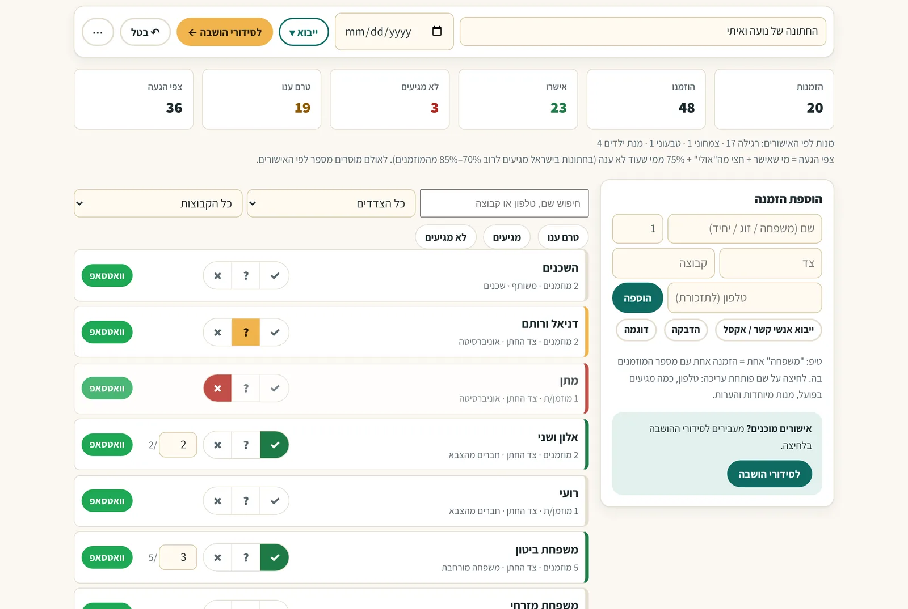
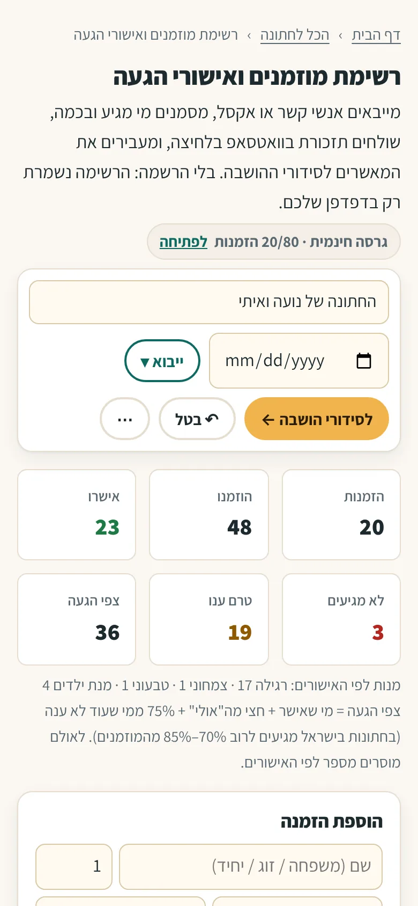

רשימת מוזמנים ואישורי הגעה: מי מגיע, כמה מנות, מי עוד לא ענה
כלי אונליין בעברית שעובד בדפדפן: מייבאים אנשי קשר או אקסל, מסמנים מי אישר, שולחים תזכורת בוואטסאפ בלחיצה ומעבירים את המאשרים לסידורי ההושבה.
לפתוח את הכלי (חינם) לראות עם רשימת דוגמה
חינם עד 80 הזמנות · ₪29 חד-פעמי לבלי הגבלה + אקסל · בלי הרשמה
ככה זה נראה
צילומי מסך מהכלי עצמו עם רשימת הדוגמה (שמות בדויים).


מה מקבלים ב-₪29
- מספר הזמנות בלי הגבלה (בחינם: עד 80 הזמנות, וכל הזמנה יכולה להיות משפחה שלמה)
- ייצוא לאקסל: כל הרשימה, סיכום מנות לפי צד, ורשימת מי שעוד לא ענה עם טלפונים
- תשלום חד-פעמי, בלי מנוי ובלי הרשמה
- הנתונים נשארים רק אצלכם בדפדפן
- בחינם כבר עכשיו: ייבוא אנשי קשר ואקסל, סטטוס הגעה, מנות, תזכורת בוואטסאפ והעברה להושבה
למי זה מתאים
- זוגות שמנהלים את אישורי ההגעה בעצמם, בלי מוקד טלפוני
- מי שרוצה לדעת בכל רגע כמה מנות להזמין ומי עוד לא ענה
- מי שירצה אחר כך להושיב את המאשרים בכלי סידורי ההושבה
ולמי פחות
- מי שרוצה שמישהו אחר יתקשר לאורחים: זה כלי לניהול עצמי, לא שירות אישורי הגעה
- שליחת הודעות המונית אוטומטית: כאן שולחים תזכורת בוואטסאפ בלחיצה לכל אורח
נסו בחינם
הכלי עצמו חינם לשימוש עד 80 הזמנות, בלי הרשמה. אפשר לטעון רשימת דוגמה ולראות הכל לפני שמחליטים.
לפתוח עם רשימת דוגמה ←איך זה עובד
משתמשים בחינם
הכלי פתוח לכולם בדפדפן, בלי הרשמה. בודקים שהוא מתאים לכם.
פותחים את הגרסה המלאה
תשלום חד-פעמי ב-PayPal או בכרטיס, בתוך הכלי או בעמוד הזה.
מייצאים מיד
ההורדות הנקיות נפתחות מיד בדפדפן שבו שילמתם. מקבלים גם קישור לדף אישור.
מתכננים את כל החתונה?
חבילת החתונה: רשימת המוזמנים המלאה + סידורי הושבה + מעצב הזמנות + מתכנן באקסל ב-₪79 במקום ₪126.
שאלות נפוצות
מה ההבדל בין החינמי למלא?
בחינם אפשר לנהל עד 80 הזמנות (כל הזמנה יכולה להיות משפחה שלמה) עם כל הפעולות: ייבוא, סטטוס, מנות, תזכורות והעברה להושבה. הגרסה המלאה (₪29 חד-פעמי) מסירה את ההגבלה ומוסיפה ייצוא לאקסל.
איפה נשמרים הנתונים?
רק בדפדפן שלכם (localStorage). הרשימה לא נשלחת אלינו. כדי לעבור מכשיר מורידים קובץ גיבוי ומעלים אותו במכשיר השני.
זה שולח הודעות לאורחים לבד?
לא. לכל אורח יש כפתור שפותח וואטסאפ עם נוסח תזכורת מוכן, ואתם לוחצים שליחה. אין שליחה המונית אוטומטית.
מה קורה כשמגיעים ל-80 הזמנות?
כל מה שכבר הוזן נשמר ונשאר זמין. פשוט אי אפשר להוסיף עוד הזמנות עד שפותחים את הגרסה המלאה.
אפשר לקבל החזר?
אפשר לבדוק הכל בחינם לפני התשלום. אם משהו לא עובד כמתואר ולא הצלחנו לתקן – מחזירים את מלוא הסכום. פרטים במדיניות הביטולים.